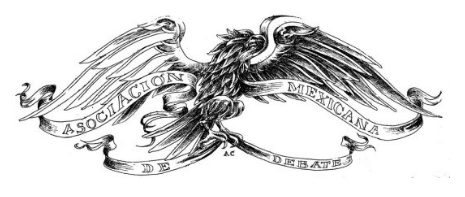

Asociación Mexicana de Debate
La asociación Mexicana de Debate (AMD) es una organización sin fines de lucro que promueve tanto la cultura del debate en México como la existencia de espacios destinados a promover la libre expresión.
La AMD busca formar ciudadanos que sean agentes de cambio dentro de sus comunidades a través de la generación de soluciones a diferentes problemas mediante el diálogo y el intercambio de ideas.
Formada por estudiantes, ex-estudiantes y entrenadores de debate con experiencia en los mejores torneos de debate a nivel mundial, la AMD organiza y colabora con los diferentes torneos de debate en México.
Entre los eventos más importantes organizados por la AMD están los dos torneos a nivel universitario con el formato BP, el Campeonato Nacional de Debate (CND) en español y el Mexican Universities Debating Championship (MUDC) en inglés.
De igual manera, la AMD organiza y coordina la Liga Metropolitana de Debate en la Ciudad de México y ofrece entrenamiento en debate competitivo para promover una cultura democrática en México y como elemento en la construcción de jóvenes que puedan formar parte activa de sus comunidades ya sean locales, nacionales o globales.
Tecnológico de Monterrey

Tecnológico de Monterrey is a university founded in 1943 with the vision of developing leaders with an entrepreneurial spirit, humanistic outlook, global vision and who are globally competitive. It currently has 31 campuses in Mexico, 25 offices, 16 international liaison offices worldwide and an offering of 54 undergraduate courses, 57 master degrees and specialties, 10 Ph. degrees and 3 senior high-school programs assisting more than 85,000 students. The institution is accredited by the Southern Association of Colleges and Schools (SACS) and it is ranked 206 among the 900 best universities in the world, according to QS World University Rankings (2016-2017). In the employer reputation indicator stands as the number 1 in Mexico and as the 56th worldwide. In the QS University Rankings: Latin America (2016) it ranks seventh and it is the only Latin American university listed in the Princeton Review’s Top Schools for Entrepreneurship (2017), ranked 17th in undergraduate entrepreneurial programs.